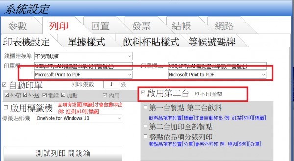

我現在是設定出單印兩張(都有金額)
這樣改我按(列印無金額單)他會印兩張(列印無金額單)出來而且也多一個動作
想說可否改成結帳後直接印一張有金額一張無金額單據 謝謝
能否結帳時直接多出一張無金額單
3 個回答
您好
站長修改了程式 在第二台增加不印金額的條件
請啟用第二台印表機 將第二台印表機設定跟第一台一樣
在將不印金額打勾 應該就能印出您想要的效果
請至首頁下載更新

因為我這邊第2台已經有印廚房的單(目前廚房單無金額OK)
現在是設定列印兩張 所以都是有金額的
想說能否直接第一台額外出一張全部餐點無金額的??
這樣就是全部的餐點有金額跟沒金額各一張的意思!! 再麻煩站長謝謝
現在是設定列印兩張 所以都是有金額的
想說能否直接第一台額外出一張全部餐點無金額的??
這樣就是全部的餐點有金額跟沒金額各一張的意思!! 再麻煩站長謝謝
您好
礙於程式架構 第一台連續列印情況下印出無金額的功能 比較難以實現
目前不考慮修改
礙於程式架構 第一台連續列印情況下印出無金額的功能 比較難以實現
目前不考慮修改